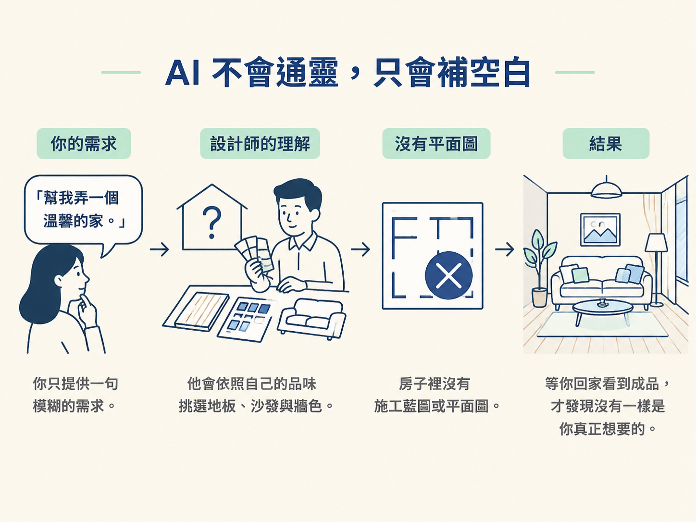
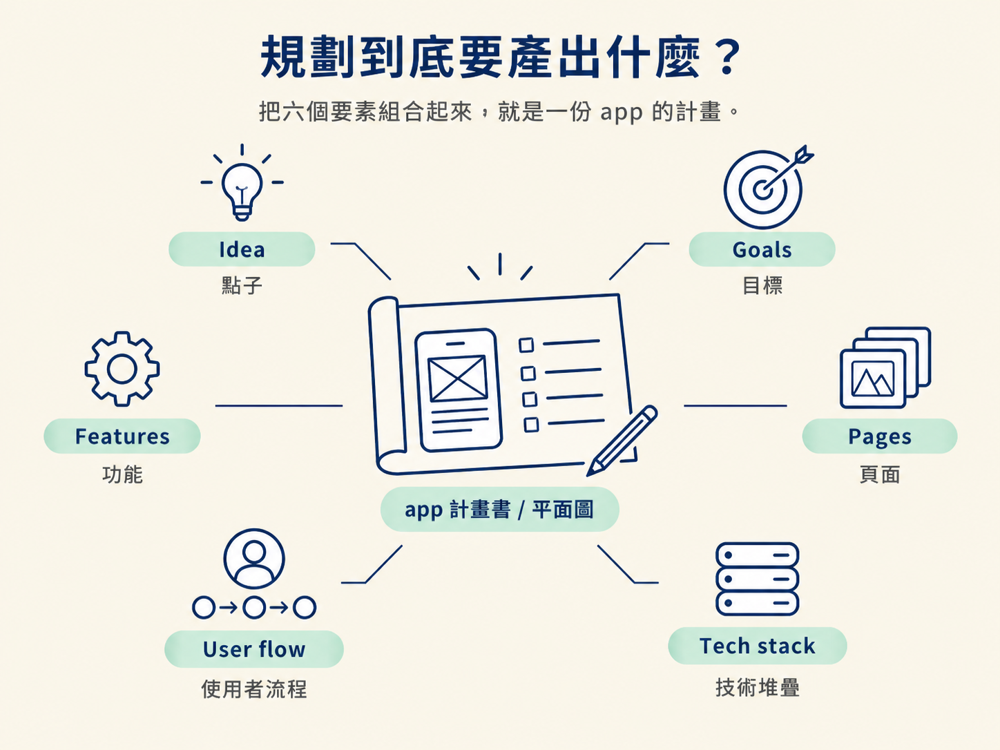

你腦中有一個 app 點子：一個幫人記錄飲食、計算熱量的工具。於是你打開 coding agent，輸入「幫我做一個熱量追蹤 app」，滿心期待它立刻開始動工。
接下來的情況可能很熟悉。它很快產出一個 Expo 專案，首頁放了幾張卡片、一個行事曆，還有一個登入按鈕，看起來有模有樣。但你越看越不對：你根本沒說要行事曆，它卻自己加上了；你想先詢問身高體重再登入，它卻把登入放在最前面；你想要的是拍照記錄，它做出來的卻只是文字輸入框。
於是你開始一來一往地修改。這裡補一句、那裡換一個畫面，改到最後才發現，反覆修正的時間可能比自己從頭做還久。
這一節要回答的，就是這種情況為什麼會發生。規劃不是流程中可有可無的禮貌，而是阻止 AI「替你亂猜」的關鍵。先把想做的事情說清楚，你才會知道為什麼值得在寫下第一行程式碼之前，先花時間整理想法。
學完這一節，你應該能說明為什麼「先規劃，再寫程式」是 AI 蓋 app 時最常被跳過、卻幾乎一定會出問題的一步，也能指出：沒有規劃時，AI 會替你猜哪些事情。
先釐清一個容易誤解的地方：現在的 coding agent 很會寫程式，但它對「你的 app 應該長什麼樣子」一無所知。你留給它的每一個空白，它通常不會停下來詢問，而是根據訓練資料中最常見的做法，自動把答案補上。
例如，你只說要做一個「社群 app」，它腦中很可能浮現最典型的 Instagram：動態牆、按讚、留言和個人頁面。但你真正想做的到底是不是這些，它不知道，也不會自動判斷自己需要先問清楚。
這就像請設計師裝潢房子，你只告訴他：「幫我弄一個溫馨的家。」他會依照自己的品味挑地板、選沙發、配顏色。等你回家看到成品，才發現沒有一樣是你真正想要的。

問題不一定出在設計師，而是你從頭到尾都沒有給他一張平面圖。AI 也是如此：它不是故意做錯，只是會把你沒說的部分，用「一般人的預設值」填滿。
如果你自己都不知道要蓋什麼，AI 又怎麼會知道？
少了規劃，問題通常不會在第一天立刻爆發，而是會在整個開發過程中慢慢消耗你的時間。代價主要有三種。
第一種是方向錯誤。AI 可能猜錯使用者流程，例如把登入放在最前面。等你發現時，已經有許多畫面依賴這個順序，修改起來就像拆掉一面承重牆，牽一髮而動全身。
第二種是重複做工。你反覆下指令修正同一個畫面，每次調整都消耗 token 和時間。這些來回，其實原本可以在規劃階段先講清楚。
第三種是沒有驗收標準。你沒有一份事先寫下來、可以拿來對照的計畫。因此，當 AI 說「做完了」，你無法判斷它到底有沒有完成真正的目標，只能憑感覺繼續追加需求。
這三種代價的共同根源，是你沒有先定義「要做什麼」。後面的功能開發、UI 設計，甚至測試，都是從這個定義往下長出來的。定義一開始就偏了，上面的每一層也會跟著歪掉。
把「規劃」講得具體一點，它其實是在回答六個問題，而且最好在寫任何程式之前就先有答案。
| 要回答的問題 | 內容 |
|---|---|
| Idea 點子 | 這個 app 是什麼、給誰使用，以及要解決什麼問題 |
| Goals 目標 | 這一版要達成什麼，例如「能動的 demo」，而不是一開始就追求「完整產品」 |
| Features 功能 | 有哪些功能，以及每個功能具體要做什麼 |
| Pages 頁面 | 有哪幾個畫面，以及各自要顯示什麼 |
| User flow 使用者流程 | 使用者從打開 app 到完成任務，依序會經過哪些畫面 |
| Tech stack 技術堆疊 | 要使用哪些框架與服務來實作，例如登入、資料庫和樣式 |
這六件事合在一起，就是一份 app 的計畫。規劃階段的任務，不是自己埋頭苦想，而是透過一場「訪談」，把它們一項一項敲定。

原因很簡單：一個人思考時，很容易漏掉那些自己早已習以為常、卻從未告訴 agent 的細節。訪談的作用，就像把腦中的隱形設定一一拿到桌面上，讓你和 agent 看到同一張藍圖。
規劃是整條 pipeline 中最常被跳過、卻幾乎一定會出問題的一步。AI 不會通靈，你留下的每一個空白，它都會用「最常見的樣子」自動填滿。跳過規劃的代價，包括方向錯誤、重複做工，以及沒有驗收標準。規劃的產出，則是在寫程式之前，先把 idea、goals、features、pages、user flow、tech stack 這六件事說清楚。
現在你知道為什麼要規劃，下一個問題就是：具體該怎麼做？總不能只對著 agent 說一句「我們來規劃吧」，然後就期待它自己完成所有事情。
下一節會介紹一個可以重複使用的做法：用一段固定的 prompt，讓 agent 反過來訪問你，把你還沒想到的細節一題一題問出來。